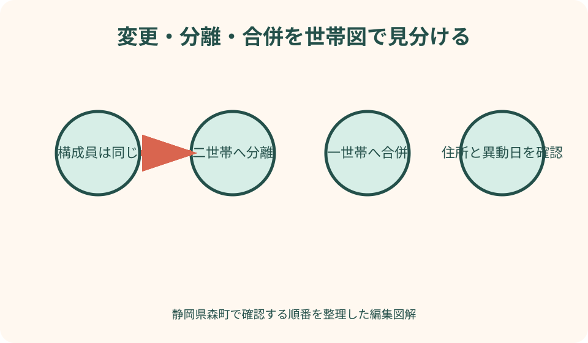
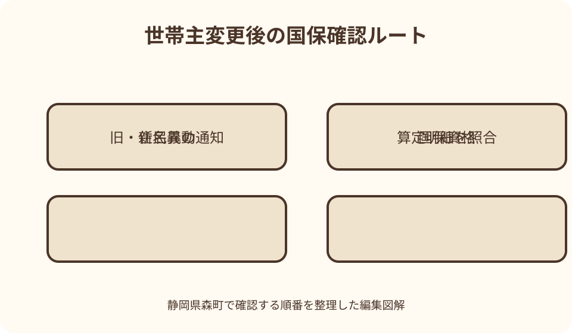

行政手続・証明書｜最終確認 2026-08-10
静岡県森町の世帯主変更届｜世帯分離との違いと国保の確認順
世帯主の変更は、家族内の呼び名を書き換えるだけの手続ではありません。住民票上の世帯構成をどう届けるかという話であり、世帯分離や世帯合併とは届出内容が異なります。さらに国民健康保険へ加入する人がいる世帯では、納税通知や軽減判定にも関係します。静岡県森町の公式案内を基に、変更理由の整理から提出後の通知確認までを順にたどります。

編集イラスト最初に確認するのは変更後の名前ではなく世帯の形
静岡県森町で世帯主変更届を考えるとき、最初の問いは「誰を世帯主にするか」ではありません。現在の住民票で誰が同じ世帯に入り、変更後もその構成を保つのかを確かめることが先です。住所が同じ家族でも住民票上の世帯が別なら、想定している届出と窓口で扱う異動が一致しないことがあります。
世帯主変更は、同じ世帯の構成員を基本的に保ったまま世帯主を替える場面として整理します。一方、同じ住所に住む人を二つの世帯へ分けるなら世帯分離、別々の世帯を一つにするなら世帯合併です。言葉が似ていても、変更後の住民票の形が違うため、窓口では希望する完成形を具体的に伝えます。
家族の中で家計を主に負担する人、住宅の所有者、自治会の名義人が、必ず住民票上の世帯主と同じになるとは限りません。家の登記名義や相続の代表者を替えたいという相談を、世帯主変更届だけで解決しようとしないことが大切です。何の記録を変えたいのかを一行で書くと、入口の取り違えを防げます。
結論を急がず、現世帯主、変更後の候補、同じ世帯に残る人、異動が生じた日を一枚にします。森町公式の「戸籍・住民異動に関する届出」では世帯主変更・分離・合併を世帯変更届として示しているため、この四点を持って住民生活課住民係へ確認するのが出発点です。
世帯主変更・世帯分離・世帯合併を言葉だけで選ばない
親子が同じ家に住み続けながら親から子へ世帯主を替える相談と、家計を分けた親子を住民票上も別世帯にする相談は同じではありません。前者を想定しているのに「親子で別にしたい」とだけ伝えると、生活実態を含む別の確認へ進みます。住所、構成員、世帯数の三つが変更前後でどうなるかを図にして伝えます。
反対に、結婚や同居を機に、同じ住所にある二世帯を一つにしたい場合は世帯合併の論点です。婚姻届を提出しただけで希望する世帯構成まで必ず整うと決めつけず、住民票で現在の世帯を確認します。戸籍の夫婦・親子関係と、住民票上の世帯は役割が異なる記録だからです。
介護サービス、保険料、扶養、税負担を理由に世帯分離を検索する人もいます。しかし、個別制度の結果だけを目的に住民票上の世帯を選べるとは限りません。実際に生計がどう分かれているか、窓口が何を確認するかを先に相談し、別制度の負担が下がるという見込みだけで届出名を決めないようにします。
迷った場合は「世帯主変更届をください」と書式名から入るより、「住所は変わらず、この人たちは同じ世帯に残り、世帯主だけをAからBへ替えたい」と説明します。森町が扱う異動の名称と、家族が望む住民票の状態を窓口で照合できれば、分離や合併との混同が小さくなります。
変更理由と異動日を家族で一本化する
届出前には、なぜ変更するのかを事実に沿って短く整理します。現在の世帯主が転出した、死亡した、世帯内の役割が変わったなど、きっかけによって同時に必要となる手続が違います。単に「今日から替えたい」ではなく、事実が生じた日と家族が届出を考えた日を分けて記録します。
森町の国民健康保険ページは、氏名・世帯主・住所が変わったときを「その他の届出」に挙げ、異動があったときの届出について案内しています。住民票の届出日と国保の資格関係の確認を別々に放置せず、国保加入者がいるかを世帯員ごとにチェックしてください。
世帯主が亡くなった場合は、死亡届、葬祭、年金、保険、相続など多くの用事が重なります。それでも、死亡に伴う世帯主変更と相続人の決定は別の話です。新しい世帯主になった人が家や預金を相続したことになるわけではないため、家族の合意事項を混ぜずに窓口ごとの表へ置きます。
現在の世帯主が森町外へ転出する場合は、転出・転居に関する異動と残る世帯の扱いを一続きで確認します。残る人が一人か複数か、同日に手続するかで案内が変わり得るためです。先に世帯主変更だけを切り出さず、異動全体を住民係へ説明します。

本人確認書類と代理届出を提出前に照合する
森町公式は、世帯主変更・分離・合併を本人確認が必要な届出として挙げています。写真付きの公的身分証明書を一種類使う場合と、別区分の資料を二種類組み合わせる場合が案内されているため、古い記事の持参物を写さず、実行日に町公式の一覧を開いて確認します。
マイナンバーカードを本人確認に使う場合でも、暗証番号を家族に預けて代理操作させる話とは分けます。カードは本人確認資料の一つであり、世帯変更届の意思や代理権限を自動で証明するものではありません。窓口へ来る人と届出の当事者を最初に伝えてください。
本人が来庁できず代理人へ頼む場合、森町公式は委任状などの書面で代理権限を確認すると案内しています。町の委任状様式には異動届の手続として世帯合併・世帯分離・世帯主変更・世帯変更の選択欄があります。どの手続を委任するのか、本人が理解した上で具体的に示すことが重要です。
委任状を代筆する必要がある事情では、代理人と代筆者を同じ人にできるかなど、様式の注意書きを先に読みます。署名欄だけを埋めた不完全な書面で往復しないよう、本人が書けない理由、代筆者、代理人の本人確認資料を住民係へ事前に相談してください。
国民健康保険に入る人がいる世帯は持参物を追加確認する
世帯員の全員が勤務先の健康保険などに加入しているケースと、誰かが森町国民健康保険へ加入しているケースでは、変更後に見る通知が違います。まず家族全員の加入先を一覧にし、国保加入者が一人でもいるなら住民係の届出に加えて国保年金係で必要な確認があるかを尋ねます。
森町の国民健康保険ページは、氏名・世帯主・住所が変わったときの届出に際し、該当する必要書類に加えて資格確認書または資格情報のお知らせを持参するよう案内しています。従来の健康保険証という言葉だけで準備せず、手元に交付されている書面の名称を確認します。
マイナ保険証を利用している人も、住民票の世帯主変更がカード利用だけで国保側へすべて反映されると思い込まないことが大切です。町公式はマイナ保険証利用者にも必要な異動手続がある旨を示しています。カードの利用登録と、世帯の資格異動は別の確認事項です。
入院中、高額療養費の申請中、限度額区分を利用中の家族がいる場合は、世帯変更後に手元の通知や申請状況をどう確認するかも国保年金係へ伝えます。給付結果を自己判断で予測せず、対象者、受診月、変更日を揃えて質問すると回答を記録しやすくなります。
国保税の納付書が二通届く可能性を先に知る
国保に関して最も見落としやすいのは、世帯主が国保加入者であるかどうかだけでは判断できない点です。森町公式は、世帯主が勤務先の健康保険に加入していても、家族に国保加入者がいれば世帯主が国保税の納付義務者になる「擬制世帯主」を説明しています。
世帯主変更後は、国保税の通知名義や納付書の分かれ方に注意します。森町の国保税FAQでは、世帯主変更前までの分と変更後の分に月割りされ、納付書が分かれる場合があると案内しています。二通届いたから二重請求だと決めつけず、対象年度、変更前後の名義、算定期間を見比べます。
一方が還付、もう一方が納付という組み合わせになる場合も町公式に示されています。家族内で旧世帯主の口座と新世帯主の納付書を別々に管理すると、合計額や期限を見失いやすくなります。届いた封筒を処分せず、税務課町民税係へ二通を一緒に示せるよう保管します。
世帯主が変わると、軽減区分が再判定される場合があることもFAQの重要な記載です。変更すれば必ず負担が上がる、または下がるとは言えません。新しい世帯主の所得を含む判定がどう行われたか、通知の算定明細を読んでから疑問点を問い合わせます。
住民票の写しは提出先が求める項目を聞いてから取る
届出後に世帯主が変わったことを確認したいとき、住民票の写しを何枚も先に取る必要はありません。勤務先、学校、金融機関など提出先ごとに、世帯主・続柄の記載が必要か、本人分か世帯全員分か、発行からの期間指定があるかを聞いてから請求します。
世帯主・続柄は、提出先によっては不要な個人情報になり得ます。用途を窓口へ伝え、必要な記載項目だけを選ぶ考え方が重要です。家族全員の情報が載る証明を、念のためという理由で広く配らないようにします。
コンビニ交付を利用できる証明があっても、世帯変更を届けた直後の反映時点や必要な記載を自己判断しないでください。急ぎの提出なら、届出と同日に取得できるか、翌開庁日以降がよいかを住民係へ確認し、提出先の期限も併せて調整します。
証明書を取得したら、変更後の世帯主だけでなく、住所、世帯員、続柄に想定外がないかを確認します。誤りと思う箇所があれば自分で書き直さず、届出控えや確認メモを持って住民係へ相談します。
死亡後の変更は相続や公共料金の名義変更と分ける
世帯主の死亡をきっかけに手続する場合、家族は短期間に多くの名義変更へ直面します。住民票上の世帯主、国保税の納税義務者、電気・水道などの契約者、不動産の登記名義人は同じ制度ではありません。チェック表の列を分け、それぞれの担当先を記します。
森町の世帯主変更を終えても、土地や建物の所有者名義が自動的に新世帯主へ移るわけではありません。相続登記は法務局や専門家へ確認する別手続です。逆に、不動産を相続しない人が生活上の世帯主になることもあり得るため、家族内の役割だけで権利関係を判断しません。
国保税の納付書が亡くなった旧世帯主分と新世帯主分に分かれた場合、相続税や遺産分割の結論と混ぜず、まず森町税務課へ納付対象期間を確認します。誰が実際に支払うかについて家族間の精算が必要なら、通知内容を確定した後に相談します。
水道、自治会、固定電話、保険契約などは、それぞれ契約先が必要書類を定めています。世帯主変更届の控えだけで全て変えられると考えず、契約番号、名義人、引落口座、次回請求日を一覧にし、生活が止まる影響の大きいものから連絡します。
良い点
世帯主変更届を適切に出す良い点は、住民票上の世帯の代表者と現在の暮らしを一致させ、その後の証明や行政通知を確認しやすくできることです。家族内の呼び方ではなく、公的記録のどこが変わったかを共有するため、後日の問い合わせでも同じ前提から話せます。
変更前に世帯分離・合併との違いを整理する過程は、同居家族の生活実態を見直す機会になります。住所が同じという事実だけで一世帯と思い込まず、現在の住民票を確認すれば、婚姻や転居時に残った認識違いを提出前に発見できます。
国保加入者を先に洗い出すと、住民票の届出だけで終えず、資格確認書や国保税通知まで追えます。特に納付書が二通に分かれた場合、町公式の説明を知っていれば、旧名義分と新名義分を落ち着いて照合し、必要な質問を具体化できます。
代理届出が必要な家庭では、町の委任状様式を早く確認することも利点です。本人が窓口へ行けない理由だけで準備を止めず、誰が意思を確認し、誰が書き、誰が持参するかを分けることで、本人の意思を守りながら手続の往復を減らせます。
注文したい点
森町公式の住民異動ページは、世帯主変更・分離・合併が本人確認対象であることを示していますが、初めての人が知りたい変更事例、届出期間、窓口で確認される生活実態が一つの表にまとまっているわけではありません。該当ページを読んだ上で、個別の異動日と世帯構成を電話で補う必要があります。
国保に関する説明も、資格の届出は住民生活課、税額と納付書は税務課のページに分かれています。利用者には一つの「国保の手続」に見えても、確認したい内容で担当が異なります。問い合わせ前に、資格確認と税額確認の二列を作るとたらい回し感を減らせます。
「世帯主」という名称は家族の上下関係を連想させますが、世帯主変更届は家族内の権限や相続順位を決める手続ではありません。言葉の印象だけで、親の財産管理や介護の決定権まで新世帯主へ移ると誤解しないための説明を、家族間でも明確にしておきたいところです。
オンラインで完結できると思って検索を始めても、本人確認や代理権限を伴う世帯変更は窓口確認が重要です。来庁が難しい人ほど、郵送やオンラインが使えると決めつけず、現在の受付方法を住民係へ尋ねます。移動時間の長い山間部からは、持参物を読み上げて確認してから出発すると安心です。

窓口当日は住民係と国保・税務の質問を分ける
窓口へ行く人は、最初に住民生活課住民係で、変更前後の世帯構成、異動日、届出人、本人確認資料を伝えます。国保加入者がいるなら、その事実も冒頭で伝えます。ただし税額の質問まで一息に説明せず、住民異動が確定した後に担当窓口を案内してもらいます。
持参物は、本人確認、委任状、国保関係、家族メモの四つに分けた封筒へ入れると確認しやすくなります。原本を預けるのか提示だけか分からない資料は、勝手に写しだけへ替えず、受付時に確認します。個人番号が載る資料は見える場所へ置きっぱなしにしません。
窓口で説明を受けたら、受付日、異動日、変更後の世帯主、次に届く通知、問い合わせ先をメモします。「手続できた」という一言だけを家族へ送ると、国保税通知や証明取得が残っていることが伝わりません。完了と保留を分けて共有します。
その日に証明書が必要な場合は、住民票への反映を確認してから申請します。提出先が求める世帯主・続柄の表示を窓口で再度伝え、交付後は役場を離れる前に内容を確認します。後日でもよいなら、不要な取得を避けるため提出先の指定を待つ選択もあります。
届出後は通知名義と支払状況を一か月単位で追う
届出が受理された後は、住民票だけでなく郵送物の宛名を確認します。国保関係、町税、子育て、介護など世帯情報を参照する制度がある場合でも、反映時期や追加届出の要否は一律ではありません。利用中の制度名を挙げ、それぞれの担当へ確認します。
国保税の更正は通知が後日になるため、届出当日に最終的な納付額が分かるとは限りません。旧世帯主宛ての納付書をすぐ捨てず、新しい通知が届くまで支払済みの期、未納の期、口座振替日を記録します。引落停止を自己判断すると未納につながるおそれがあります。
二通の納付書が届いたら、封筒ごとに見るのではなく、同じ年度の全期分を横に並べます。町公式が説明するように変更前後の期間で分かれている可能性があるため、年度、通知番号、納期限、還付記載を比較します。それでも合計が読めないときは税務課へ両方を示します。
家族が代理で支払う場合は、誰の名義のどの期を払ったかを領収書と結びます。旧世帯主の死亡後であれば、生活費からの支払と相続関係の支払を混ぜず、後で説明できる記録を残します。税務上の個別判断が必要なら、町または税の専門家へ相談します。
予定どおり進まない場面の切り分け
本人確認資料が不足したときは、家族のカードを代用せず、森町公式のA区分一種類またはB区分二種類という案内へ戻ります。有効期限、氏名、住所の表示が現在のものかも確認し、代替に使える資料を住民係へ具体的な名称で尋ねます。
本人が署名できない、意思を伝えにくい、入院中である場合は、家族が当然に代理できると判断しません。委任状の代筆欄や法定代理人に関する確認が必要かを説明し、本人の状況に合う方法を相談します。急ぐ事情があっても、白紙委任状への署名は避けます。
世帯分離を希望したものの生活実態について追加確認を求められたら、制度上の利益だけを繰り返すのではなく、家計、居住場所、日常生活の分担を事実に沿って説明します。受理の可否を民間記事で保証することはできないため、窓口の説明と不足事項を持ち帰って整理します。
届出後の国保税額が想定と違った場合は、世帯主変更そのものを失敗と決めつけません。資格異動日、軽減区分、所得情報、納付書の分割など確認点があります。住民係へ世帯の記録、国保年金係へ資格、税務課へ算定通知という順に論点を分けます。
代案・結論
来庁前に届出区分を判断できない場合の代案は、現在と希望後の世帯図を作り、住民係へ名称を確認することです。電話では個人情報を詳しく話し過ぎず、同住所、現在の世帯数、変更後の世帯数、届出人との関係を伝え、窓口で必要な資料を聞きます。
平日に本人が動けない場合は、代理届出の可否と委任状の書き方を先に確認します。町公式様式を印刷できないときの入手方法、代筆が必要なときの条件、代理人の本人確認資料を一度に質問してください。受付方法や開庁時間は変更の可能性があるため実行日に再確認します。
国保加入者がいるか分からないときは、家族の勤務先保険、資格確認書、資格情報のお知らせを確認し、判断できない資料名を国保年金係へ伝えます。世帯主が国保未加入でも納税義務者となる場合があるため、「新世帯主は会社員だから国保は無関係」と結論づけないことが重要です。
結論として、森町の世帯主変更は、変更後の世帯図を固める、本人確認と代理権限を揃える、国保資格を確認する、後日の国保税通知を追う、という四段階で進めます。一度の来庁で全ての金額まで確定させるより、担当別の未完了事項を残さない進め方が確実です。
大石の視点
大石の視点では、世帯主変更を家族の上下関係の決定として扱わないことが最も大切です。森町で親子が同居する家でも、生活費を担う人、介護連絡を受ける人、住民票上の世帯主、住宅所有者が同じとは限りません。役割ごとに名前を書けば、家族間の不要な衝突を減らせます。
実家の世帯主が亡くなった相談では、行政手続と家の管理が同時に見えます。しかし、新しい世帯主を決めることと、空き家を売る・貸す・保有する結論は別です。まず住み続ける人の生活と通知の受取先を整え、不動産の選択は権利資料を確認してから考えます。
森町の北部や山間部から役場へ出る家族には、一回の往復が大きな負担になります。だからこそ、世帯図、本人確認資料名、国保加入者、代理の有無を電話前に一枚へまとめる価値があります。情報量を増やすのではなく、窓口が判断できる事実を揃えることが実用性につながります。
変更後に本当に役立つのは、提出日の記憶より、次に届く通知と確認担当を残した記録です。住民票は住民係、国保資格は国保年金係、国保税の算定は税務課というように、家族が見ても戻り先が分かる表を作ってください。それが将来の転居や死亡後手続にも使える基礎になります。
提出前日と提出後に使う最終チェック
提出前日は、現在の住所、現在の世帯主、同じ世帯の全員、変更後の世帯主、異動日を声に出して確認します。世帯員の増減や住所変更もあるなら、世帯主変更だけではないことをメモの先頭に書きます。家族ごとに違う説明を窓口へ持ち込まないためです。
次に、窓口へ行く人の本人確認資料と、代理の場合の委任状を確認します。国保加入者がいる世帯は、資格確認書または資格情報のお知らせなど町が案内する持参物を加えます。資料の最新版は、2026年8月10日の記事確認後も変更され得るため当日に町公式へ戻ります。
提出後は、住民票の確認が必要か、国保の追加手続が残ったか、国保税通知はいつ頃どの名義で届くかを聞きます。回答を家族共有メモへ追記し、旧名義の納付書や引落予定を勝手に止めません。新旧の通知が揃うまで一つのファイルに保管します。
このチェックを終えれば、世帯主変更を単独の紙一枚としてではなく、住民票、本人確認、代理権限、国保資格、国保税通知まで一続きで管理できます。個別事情による受付判断や税額をこの記事で保証せず、森町の担当窓口が示した最新条件を最終判断にしてください。
公式情報・確認先
掲載内容は次の一次情報を基礎に整理しました。営業、料金、催し、交通は変わるため、出発前または手続き前にリンク先で最新情報を確認してください。
- 戸籍・住民異動に関する届出（静岡県森町、2026-08-10確認）
- 国民健康保険（静岡県森町、2026-08-10確認）
- 国民健康保険税のよくある質問（静岡県森町、2026-08-10確認）
- 国民健康保険税とは（静岡県森町、2026-08-10確認）
- 委任状（代理人選任届）（静岡県森町、2026-08-10確認）